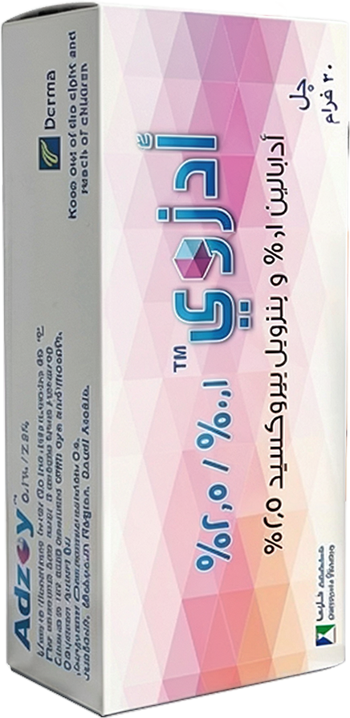

Clinic visit · Week 0
Clinical Presentation
Sara, 22 — Clinical Presentation
Tap the glowing points on Sara’s face.

Before treatment
Psychological Impact
Graduation is coming, and so are the flares
Sara is socially active and has an upcoming graduation celebration. She feels self-conscious when her acne flares, particularly before important social occasions.

Patient profile 2 Illustrative
Sara, 22
University graduate · Mild-to-moderate acne vulgaris · Irritation with past treatments
“My graduation is coming up, and I want clearer skin quickly. Previous acne treatments caused irritation, so I need something effective, well-tolerated, and with early improvement.”


Your decision
What would you prescribe for Sara?
Recommended for Sara
Consider Adzoy™ 0.1% gel once daily

Why?
- Targets both inflammatory and non-inflammatory acne lesions
- Provides significant improvement as early as Week 1
- Supports maintenance of treatment response and helps reduce acne relapse with continued once-daily use
- Favorable tolerability profile, with local reactions generally mild and transient
- One fixed-dose topical gel for once-daily use
Every evening
Sara’s routine
One gel instead of several
One fixed-dose topical gel, applied once daily in the evening.
- Cleanse
- Pat dry
- Thin film
- Sleep

Adzoy™ (adapalene/BPO) 0.1%: sustained efficacy for long-term acne management
Outcome: Adzoy™ (adapalene/BPO) 0.1% demonstrated favorable long-term tolerability, with most skin irritation being mild to moderate, occurring early and decreasing over time.
Local skin tolerability: erythema, scaling, dryness and stinging/burning
Tolerability scale: 0 = none; 1 = mild; 2 = moderate; 3 = severe. Mean scores at each postbaseline visit; worst score = highest postbaseline severity per subject.
Study at a glance
Adzoy™ (adapalene/BPO) 0.1%: significantly greater efficacy as early as Week 1 versus monotherapy
A multicenter, randomized, double-blind, controlled trial involving 1,668 patients with moderate facial acne.
Outcome: By Week 12, Adzoy™ (adapalene/BPO) 0.1%, applied once daily in the evening, achieved a significantly higher success rate versus monotherapies (p ≤ 0.006).
Good tolerability and safety profile, comparable to adapalene and benzoyl peroxide monotherapies.
Success rates over time: percentage of participants rated clear or almost clear during the course of the study
P < 0.001 vs. adapalene monotherapy and vehicle at Week 1.
Study at a glance

Sara’s voice after acne healing
“With Adzoy Gel, I started seeing improvement early without the irritation I had experienced before. I was finally able to keep using my treatment and feel more confident going into my graduation.”